Model menjawab berdasarkan dokumen yang diambil saat pertanyaan masuk. Kalau dokumennya tidak ketemu, dia bilang tidak tahu.
CONTOHNYA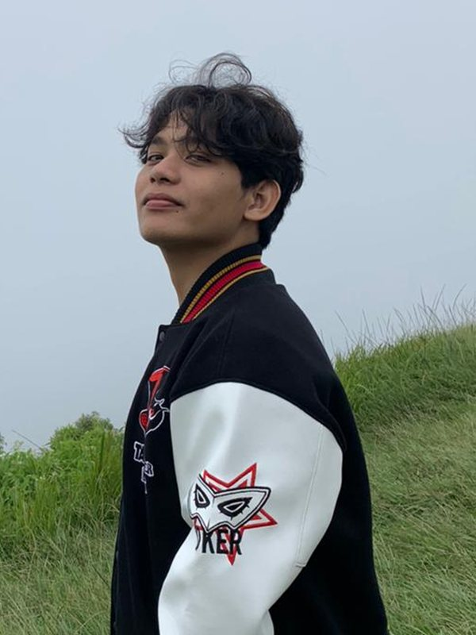
TEKNIK INFORMATIKA · UNIVERSITAS ISLAM RIAU
RIFQI PERMANA PUTRA
BE GREATER, BE TOGETHER
Mahasiswa Teknik Informatika. Saya membuat sistem AI dan aplikasi web, termasuk tampilannya.
ABOUT
Sistem AI dan Aplikasi Web
Saya kuliah Teknik Informatika di Universitas Islam Riau. Yang paling sering saya kerjakan adalah sistem AI yang menjawab berdasarkan dokumen (RAG). Sebagian besar waktunya habis untuk memeriksa apakah jawabannya sesuai dengan sumbernya.
Tampilannya juga saya kerjakan sendiri, pakai React, TypeScript, dan Tailwind. Dari lima proyek, empat saya garap sampai ke antarmukanya.
Sebagian besar berangkat dari masalah yang saya lihat sendiri: pekerja lapangan yang butuh bantuan teknis cepat, warga yang bingung mencari peraturan daerah, dan orang tua saya yang masih mencatat keuangan toko pakai buku tulis.
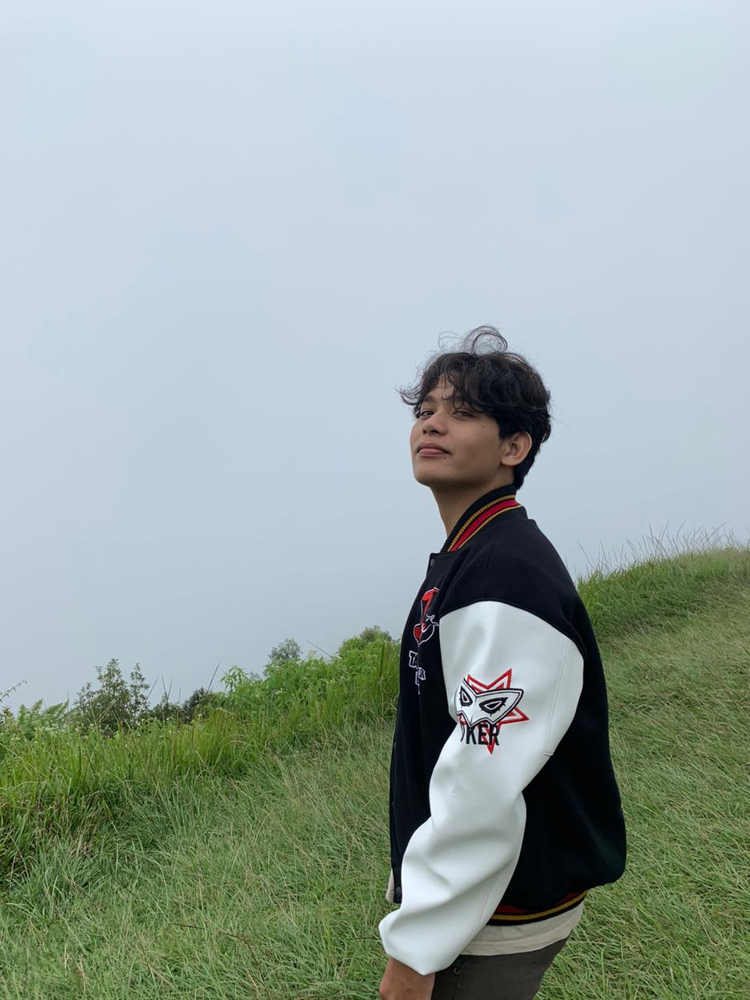
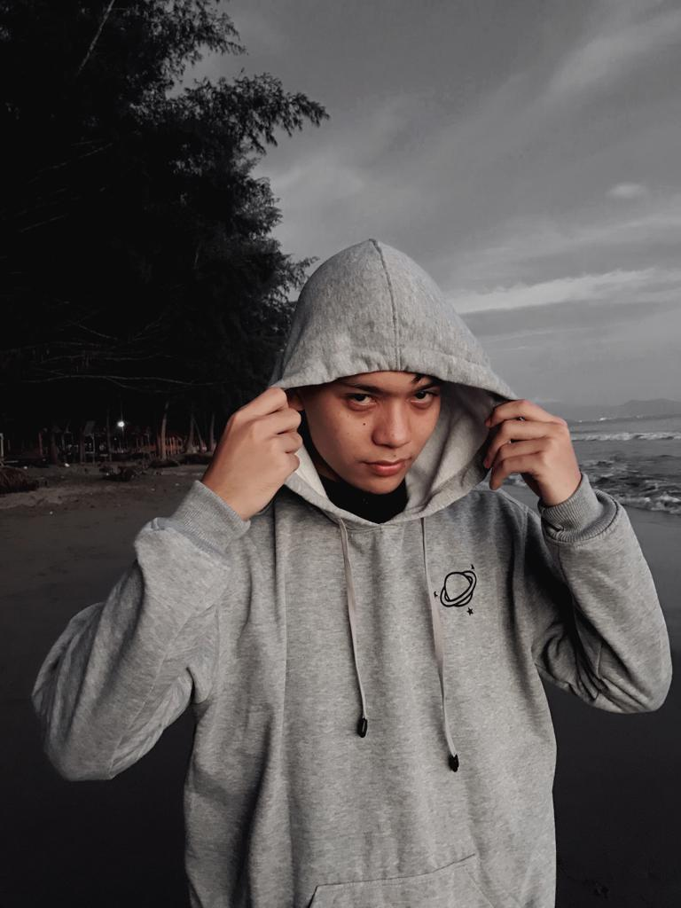
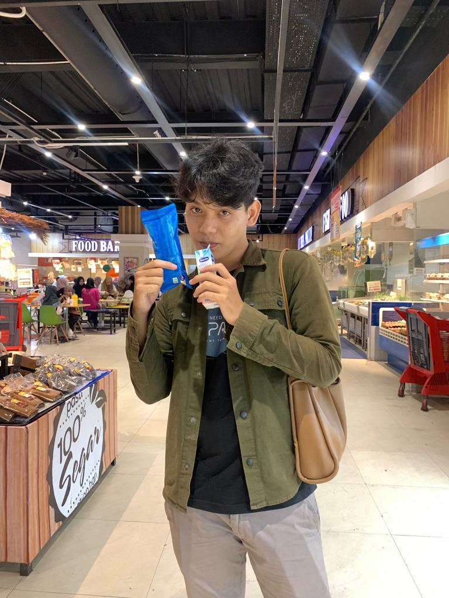
Setiap jawaban harus punya sumber.
Semua sistem AI yang saya buat menampilkan sumber jawabannya.
Kualitasnya saya periksa dengan RAGAS dan LangSmith.
AI & LLM
BIDANG UTAMA 01
RAG dan Graph RAG
Saya sudah mencoba dua cara yang berbeda. Di Perda AI, pencariannya dua tahap: Neo4j menyaring dulu dokumen mana yang masuk akal, baru ChromaDB mencari isinya. Di asisten Valorant saya pakai cara lain, yaitu tiga vector store terpisah dengan penebak maksud di depannya, supaya pertanyaan soal senjata tidak menarik dokumen tentang agen.
SELENGKAPNYA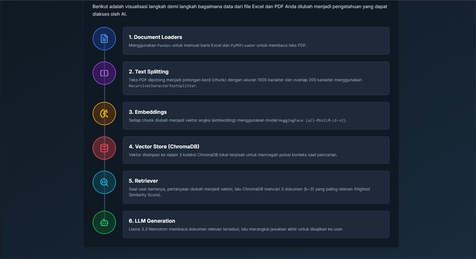
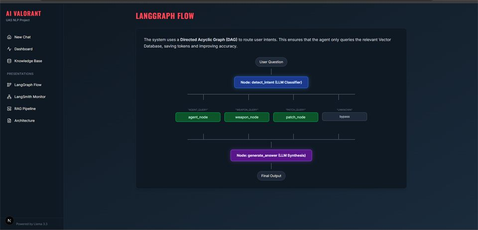
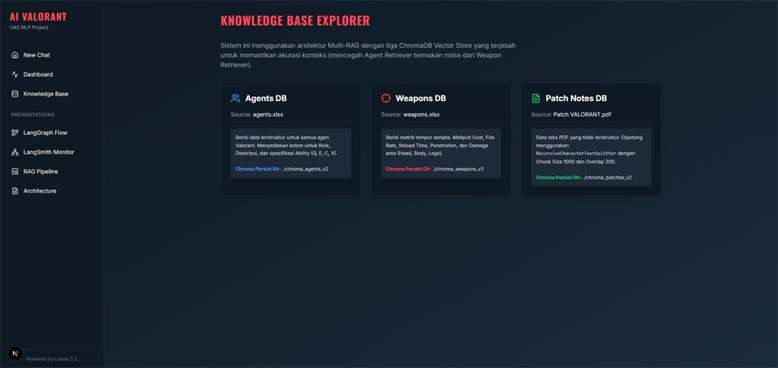
FRONTEND
BIDANG UTAMA 02
React, TypeScript, Tailwind
Di SIGAP, penggunanya pekerja lapangan yang biasanya sedang buru-buru, jadi alurnya dibuat selangkah demi selangkah dan tidak perlu instal apa-apa. Di KampusHub, mahasiswa tinggal memindai QR lewat kamera ponsel untuk masuk acara.
SELENGKAPNYA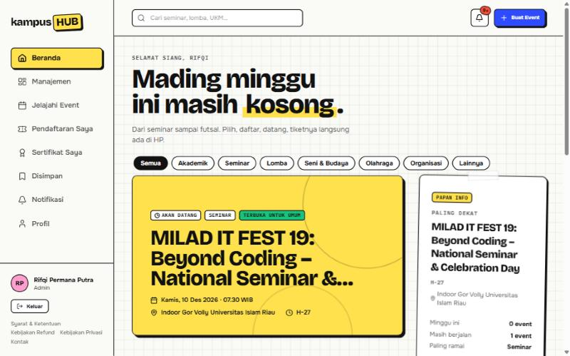
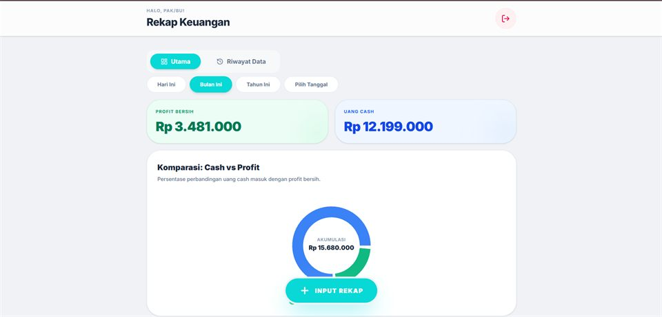
ISTILAH
Empat istilah yang sering muncul di proyek saya. Kalau belum familier, ini penjelasan singkatnya.
Pencariannya dua tahap. Graf hubungan antar-dokumen menyaring dulu mana yang masuk akal, baru pencarian makna dijalankan di sisanya.
CONTOHNYASebelum mencari, sistem menebak dulu pertanyaannya soal apa, lalu mengarahkannya ke sumber yang cocok. Jadi pertanyaan soal senjata tidak nyasar ke dokumen agen.
CONTOHNYATeks diubah jadi deretan angka yang mewakili maknanya. Pencariannya lalu berdasarkan kemiripan arti. Contohnya, kata "sampah" dan "limbah" dianggap berdekatan.
CONTOHNYAWORKS
Lima Proyek
KERJA PRAKTIK · 2026 · TIM 5 ORANG
SIGAP
PT Pertamina Hulu Rokan Zona 1 Field Lirik · frontend dan antarmuka
Layanan aduan ICT internal untuk pekerja Field Lirik. Keluhan dicocokkan dengan panduan SOP, lalu penggunanya dituntun menyelesaikannya sendiri. Kalau belum tuntas, laporannya diteruskan ke engineer lewat WhatsApp. Semuanya jalan tanpa internet dan tanpa API key, dengan respons sekitar 0,14 detik.
SELENGKAPNYA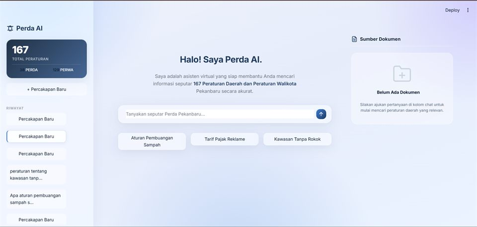
PROYEK KULIAH · 2026 · TIM 5 ORANG
PERDA AI
Backend dan sebagian antarmuka · Graph RAG
Chatbot untuk 167 peraturan daerah dan peraturan wali kota Pekanbaru: 38 Perda dan 129 Perwa. Sebelumnya warga harus buka situs resmi, menebak dokumen mana yang benar, lalu membaca puluhan halaman cuma untuk menemukan satu pasal.
SELENGKAPNYA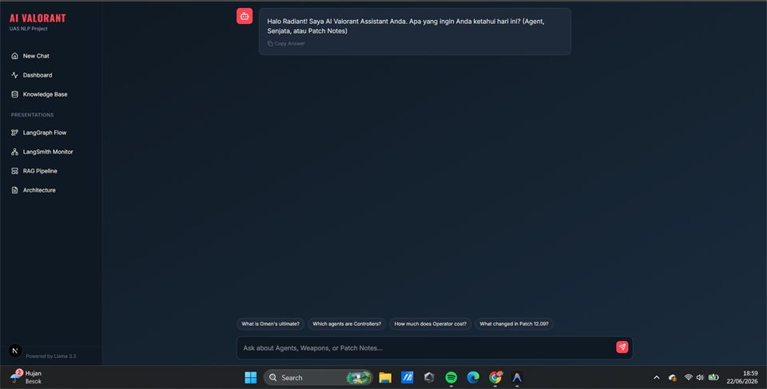
EKSPLORASI TEKNIK · 2026 · MANDIRI
AI VALORANT ASSISTANT
Dikerjakan sendiri · Multi-RAG dan intent routing
Asisten yang menjawab pertanyaan soal agen, senjata, dan catatan pembaruan. Daripada menaruh semuanya di satu vector store, saya pisah jadi tiga dan menaruh penebak maksud di depannya, supaya isi satu topik tidak tercampur ke topik lain.
SELENGKAPNYAPROJECT CAPSTONE · 2026 · TIM · SUDAH TAYANG
KAMPUSHUB
Frontend dan UI/UX · React 19 dan Supabase
Informasi acara kampus tersebar di WhatsApp, Instagram, dan grup yang terpisah-pisah. KampusHub mengumpulkannya jadi satu, lengkap dengan RSVP, e-tiket QR, pemindai kehadiran, pembayaran event berbayar, dan sertifikat. Ada tiga peran: mahasiswa, panitia, dan admin.
SELENGKAPNYAPROYEK PRIBADI · MANDIRI · SUDAH TAYANG
REKAP KEUANGAN
Toko elektronik keluarga · React 19 dan Firebase
Orang tua saya sudah bertahun-tahun mencatat keuangan toko di kertas, dan tiap tutup buku hitungannya lama serta rawan salah. Aplikasi ini menggantikannya: input cepat, rekap otomatis dari harian sampai tahunan.
SELENGKAPNYAMETHOD
Saya biasanya mulai dari masalah yang dialami orang di sekitar saya. Setelah sistemnya jalan, saya ukur hasilnya.
PERJALANAN SAYA- 01MULAI DARI MASALAHNYAContohnya keluhan pekerja lapangan, warga kota, dan orang tua saya sendiri.
- 02UKUR HASILNYARAGAS untuk menilai kualitas jawaban, LangSmith untuk menelusuri alurnya.
- 03KERJAKAN ANTARMUKANYAAntarmukanya saya kerjakan sendiri supaya sistemnya bisa langsung dipakai.
BIDANG UTAMA
AI & LLM
- RAG
- LangChain
- LangGraph
- ChromaDB
- Neo4j
- RAGAS
- LangSmith
FRONTEND
- React
- TypeScript
- Next.js
- Tailwind CSS
- Vite
BACKEND & DATABASE
- Python
- FastAPI
- Node.js
- Firebase
- SQLite
DESAIN & KOLABORASI
- Desain konten media sosial
- Penyuntingan video
- Figma
- Canva
- Kerja tim
- Kepemimpinan
KEAHLIANSKILL SET
Empat Bidang
Bidang utama saya AI dan LLM, ditambah frontend, backend, dan desain.
HUBUNGI SAYAPROFILE
- NAMA
- Rifqi Permana Putra
- STATUS
- Mahasiswa tingkat akhir, terbuka untuk magang dan posisi entry-level
- PENDIDIKAN
- Teknik Informatika, Universitas Islam Riau (2023 – sekarang)
- DOMISILI
- Pekanbaru, Riau
- FOKUS
- Sistem AI berbasis retrieval (RAG) dan pengembangan frontend
- BAHASA
- Indonesia (penutur asli) · Inggris (membaca dokumentasi teknis dengan lancar, komunikasi tulisan dan lisan tingkat menengah)
- ORGANISASI
- Kepala Divisi Kominfo HIMATIF UIR 2026/2027
Anggota divisi yang sama pada periode 2025/2026